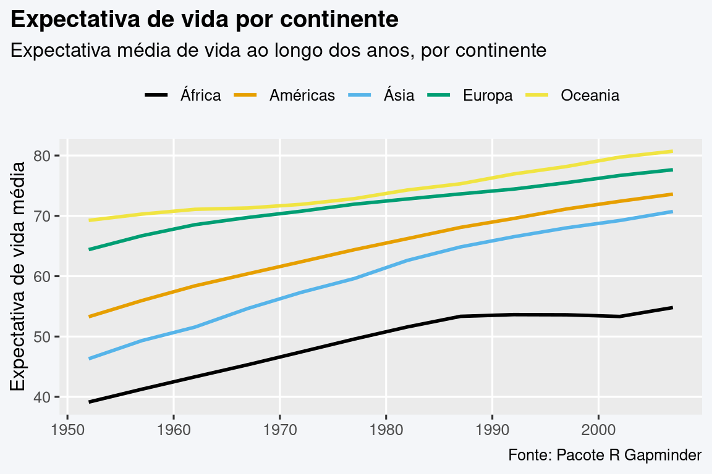
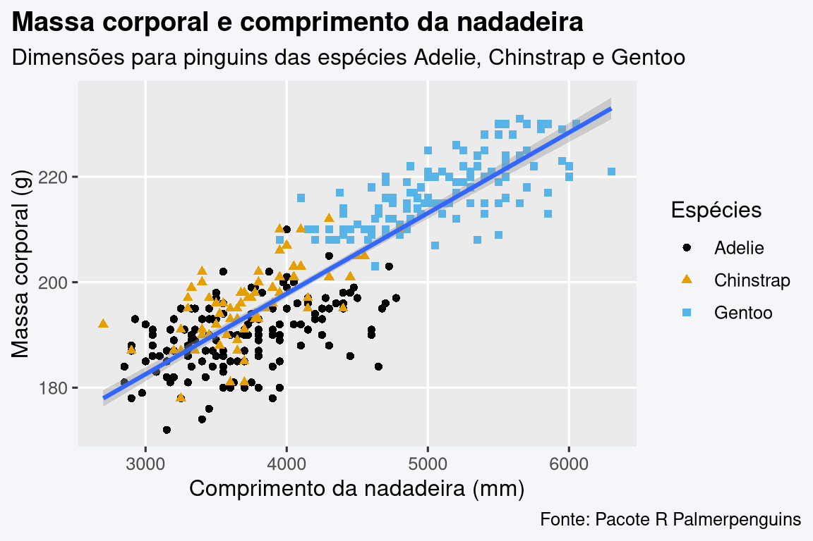
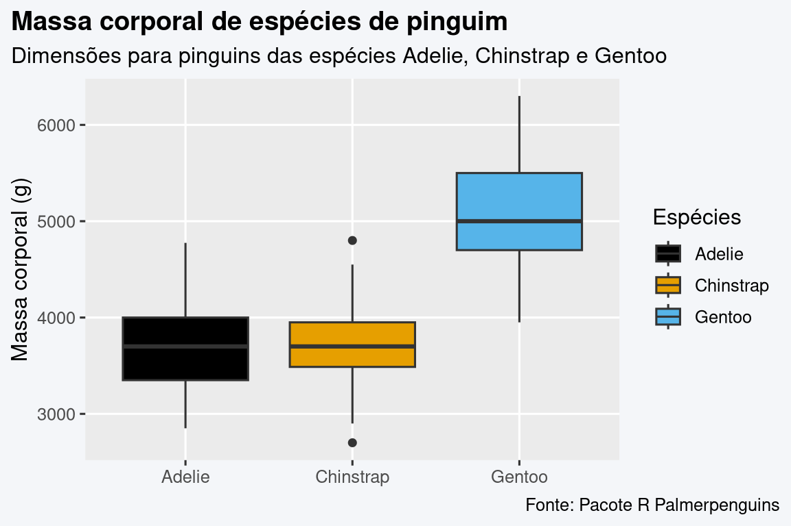

library(tidyverse)
#> ── Attaching core tidyverse packages ───────────────────── tidyverse 2.0.0 ──
#> ✔ dplyr 1.1.4 ✔ readr 2.1.5
#> ✔ forcats 1.0.0 ✔ stringr 1.5.1
#> ✔ ggplot2 3.5.1 ✔ tibble 3.2.1
#> ✔ lubridate 1.9.4 ✔ tidyr 1.3.1
#> ✔ purrr 1.0.4
#> ── Conflicts ─────────────────────────────────────── tidyverse_conflicts() ──
#> ✖ dplyr::filter() masks stats::filter()
#> ✖ dplyr::lag() masks stats::lag()
#> ℹ Use the conflicted package (<http://conflicted.r-lib.org/>) to force all conflicts to become errorsUma breve introdução ao Tidyverse
Um resumo do essencial para iniciar no mundo do Tidyverse.
O tidyverse, uma coleção de pacotes focados em ciência de dados, é um dos principais atrativos da linguagem de programação R. Nesta postagem serão sintetizados os principais aspectos necessários para o início da jornada na ciência de dados com o tidyverse.
O que é o Tidyverse?
A gramática do tidyverse segue uma estrutura lógica e comum em todas as suas funções. A principal ideia é que o primeiro parâmetro seja um objeto e os outros parâmetros venham em seguida. Além disso, um conjunto de verbos são disponibilizados para facilitar o uso das funções.
A filosofia do tidyverse e a gramática das funções também é utilizada em diversos outros pacotes, que se tornam compatíveis com a coleção.
Para instalar o tidyverse e seus principais pacotes, basta usar a função install.packages("tidyverse"), do R base. Para carregar os pacotes, use library(tidyverse).
Principais pacotes do Tidyverse
Os principais pacotes do tidyverse, conhecidos como os pacotes core tidyverse, são os seguintes:
| Pacote | Descrição |
|---|---|
| ggplot2 | Gramática para criar gráficos |
| purrr | Programação funcional no R |
| tibble | Sistema de tabelas moderno |
| dplyr | Gramática para a transformação de dados |
| tidyr | Conjunto de funções para criar dados tabulares |
| stringr | Funções próprias para lidar com caracteres |
| readr | Funções para a importação de dados |
| forcats | Ferramentas para trabalhar com variáveis categóricas |
| lubridate | Funções para trabalhar com dados em formato de datas e horas |
Além dos pacotes já mencionados, outros pacotes fazem parte do tidyverse e são usados frequentemente para trabalhar ao lado dos principais pacotes. O readxl, por exemplo, permite a importação de planilhas em formado Excel (.xls ou .xlsx). Para conhecer todos os pacotes que fazem parte do tidyverse podemos utilizar a função tidyverse_packages().
tidyverse_packages()
#> [1] "broom" "conflicted" "cli" "dbplyr"
#> [5] "dplyr" "dtplyr" "forcats" "ggplot2"
#> [9] "googledrive" "googlesheets4" "haven" "hms"
#> [13] "httr" "jsonlite" "lubridate" "magrittr"
#> [17] "modelr" "pillar" "purrr" "ragg"
#> [21] "readr" "readxl" "reprex" "rlang"
#> [25] "rstudioapi" "rvest" "stringr" "tibble"
#> [29] "tidyr" "xml2" "tidyverse"É muito comum ocorrer conflitos entre funções, ou seja, diferentes funções com o mesmo nome existem em diversos pacotes. Para evitar conflitos, podemos especificar o pacote na frente da função que queremos usar, separado por dois pontos escritos duas vezes (nome_pacote::nome_funcao).
dplyr::filter()
# ou, caso quiser usar a função de mesmo nome do pacote stats
stats::filter()Antes de adentrar em cada pacote, analisaremos o estilo de programação de código R.
Estilo de programação
No R não há um guia universal para o estilo de programação, ou seja, na sintáxe do R não é necessário seguir regras específicas nos scripts. De todo modo, é recomendável trabalhar de uma maneira homogênia, uniforme, legível e clara quando escrevemos scripts. O Tidyverse possui seu próprio guia de estilo de programação.
Resumidamente, as principais recomendações são as seguintes:
- Evitar usar mais de 80 caracteres por linha para facilitar a leitura do código.
- Sempre usar um espaço depois de uma vírgula, mas nunca antes.
- Os operadores (+,-,==,<-,|>, etc.) devem ter um espaço antes e depois.
- Não há espaço entre o nome de uma função e seu primeiro parêntese, nem entre o último parâmetro e o último parêntese da função.
- Evite usar nomes de funções a variáveis comuns (
mean <- 5vsmean()) - Organize o script separando as seções com comentários (
# Import data -----) - Evite acentos ou símbolos especiais em nomes de objetos, arquivos, etc.
- Nomes de objetos devem seguir uma estruturação constante:
dia_um,dia_dois
É recomendável usar a indentação corretamente para múltiplos parâmetros de uma função ou funções sequenciadas pelo operador pipe (|>)
Operador Pipe
Para facilitar trabalhar com gerenciamento, transformação e visualização de dados, o operador pipe, na forma de |>, é chamado para o resgate. O opereador pipe visa combinar várias funções sem a necessidade de assinalar o resultado a um novo objeto. O pipe aplica basicamente o output de uma função como o primeiro parâmetro da próxima função. Essa forma de combinação permite a junção de diversos passos simultaneamente, para desempenhar tarefas sequenciais. No exemplo abaixo, passamos o vetor 1:5 para a função mean() para calcular a média por intermédio do pipe.
1:5 |> mean()Os pacotes do Tidyverse
Agora iremos destrinchar os principais pacotes que compõem o universo do tidyverse.
Importação e exportação dados
O pacote readr facilita ler ou escrever os mais diversos formatos usando funções que começam com read_* ou write_*. Em comparação ao R base, readr é mais rápido, consegue lidar com nomes de colunas problemáticos e datas são convertidas automaticamente. As tabelas importadas são da classe tibble, do pacote de mesmo nome, tibble, que basicamente é uma versão moderna do data.frame. Na mesma linha, é possível usar a função read_excel() do pacote readxl para importar dados de planilhas de Excel. No exemplo abaixo, importaremos o dataset Palmer Penguins, que contém dados de três espécies de pinguim no arquipélago de Palmer, na Antártica.
| Função | Descrição |
|---|---|
read_csv() |
Importa arquivos .csv (separados por ,) |
read_csv2() |
Importa arquivos .csv (separados por ;) |
read_delim() |
Separador geral |
read_table() |
Separador de espaços |
library(tidyverse)
# read_csv() importa o arquivo penguins.csv, que está na pasta "data".
# Assinalamos o conteúdo do arquivo .csv ao objeto chamado "penguins"
penguins <- read_csv("data/penguins.csv")
#> Rows: 344 Columns: 9
#> ── Column specification ─────────────────────────────────────────────────────
#> Delimiter: ","
#> chr (3): species, island, sex
#> dbl (6): rowid, bill_length_mm, bill_depth_mm, flipper_length_mm, body_ma...
#>
#> ℹ Use `spec()` to retrieve the full column specification for this data.
#> ℹ Specify the column types or set `show_col_types = FALSE` to quiet this message.
# Ao visualizar o conteúdo do objeto "penguins" temos um tibble com dados,
# pronto para trabalhar
penguins
#> # A tibble: 344 × 9
#> rowid species island bill_length_mm bill_depth_mm flipper_length_mm
#> <dbl> <chr> <chr> <dbl> <dbl> <dbl>
#> 1 1 Adelie Torgersen 39.1 18.7 181
#> 2 2 Adelie Torgersen 39.5 17.4 186
#> 3 3 Adelie Torgersen 40.3 18 195
#> 4 4 Adelie Torgersen NA NA NA
#> 5 5 Adelie Torgersen 36.7 19.3 193
#> 6 6 Adelie Torgersen 39.3 20.6 190
#> # ℹ 338 more rows
#> # ℹ 3 more variables: body_mass_g <dbl>, sex <chr>, year <dbl>Para mais detalhes, vale a pena consultar o cheat-sheet do readr.
Trabalhando com caracteres
Para trabalhar com caracteres (strings), usamos o pacote stringr, com suas funções sempre iniciando com str_*, seguido pelo verbo e o primeiro parâmetro. Algumas das funções são:
| Função | Descrição |
|---|---|
str_replace() |
Substitui padrões |
str_c() |
Combina caracteres |
str_detect() |
Detecta padrões |
str_extract() |
Extrai padrões |
str_sub() |
Extrai por posição |
str_length() |
Retorna o tamanho de uma string |
É comum o uso de expressões regulares (regex) para detecção de padrões. Abaixo temos alguns exemplos de funções do stringr em ação em conjunto com o uso de regex.
# Vetor com os nomes dos meses em inglês
month.name
#> [1] "January" "February" "March" "April" "May" "June"
#> [7] "July" "August" "September" "October" "November" "December"
# substituir 'ber' com espaço vazio
str_replace(month.name, pattern = "ber$", "")
#> [1] "January" "February" "March" "April" "May" "June"
#> [7] "July" "August" "Septem" "Octo" "Novem" "Decem"
# combinar os caracteres
str_c(month.name, 1:12, sep = "_")
#> [1] "January_1" "February_2" "March_3" "April_4" "May_5"
#> [6] "June_6" "July_7" "August_8" "September_9" "October_10"
#> [11] "November_11" "December_12"
# colapsar combinação
str_c(month.name, collapse = ", ")
#> [1] "January, February, March, April, May, June, July, August, September, October, November, December"
# detectar padrão
str_detect(month.name, pattern = "^A")
#> [1] FALSE FALSE FALSE TRUE FALSE FALSE FALSE TRUE FALSE FALSE FALSE FALSE
# extrair padrão
str_extract(month.name, pattern = "ber$")
#> [1] NA NA NA NA NA NA NA NA "ber" "ber" "ber" "ber"
# extrair caracteres entre as posições 1 e 2
str_sub(month.name, start = 1, end = 2)
#> [1] "Ja" "Fe" "Ma" "Ap" "Ma" "Ju" "Ju" "Au" "Se" "Oc" "No" "De"
# tamanho da string de cada mês
str_length(month.name)
#> [1] 7 8 5 5 3 4 4 6 9 7 8 8Mais detalhes sobre as funções e expressões regulares podem ser encontrados no cheat-sheet do stringr.
Gerenciamento de datas e horas
O pacote lubridate é excelente para lidar com datas e horas. Apenas devemos conhecer as seguintes abreviações:
ymdsignficay:year(ano),m:month(mês),d:day(dia)hmssignficah:hour(hora),m:minutes(minutos),s:seconds(segundos)
# vetor com datas
datas <- c("2020/12/31", "2012/05/04", "2003/09/24","2017/11/24")
# vetor com datas e horas
datas_horas <- c("1973-08-11 02:00", "2009-06-13 20:00")
datas <- ymd(datas)
datas
#> [1] "2020-12-31" "2012-05-04" "2003-09-24" "2017-11-24"
dmy("13-08-2002")
#> [1] "2002-08-13"
ymd("20020813")
#> [1] "2002-08-13"
# extrair o ano
year(datas)
#> [1] 2020 2012 2003 2017
# extrair o mês
month(datas)
#> [1] 12 5 9 11
# extrair o dia da semana
wday(datas)
#> [1] 5 6 4 6
# extrair a hora
hour(datas_horas)
#> [1] 2 20
# adiciona 10 dias
datas + days(10)
#> [1] "2021-01-10" "2012-05-14" "2003-10-04" "2017-12-04"
# adiciona 1 mês
datas + month(1)
#> [1] "2021-01-01" "2012-05-05" "2003-09-25" "2017-11-25"Para mais detalhes, veja o cheat-sheet do lubridate.
Transformação de tabelas
Os pacotes dplyr e tidyr oferecem gramática para a transformação de dados, ou seja, um conjunto de verbos úteis para resolver problemas. As funções mais importantes são:
| Função | Descrição |
|---|---|
mutate() |
Adiciona ou modifica variáveis |
select() |
Seleciona variábeis |
filter() |
Aplica filtro |
summarise() |
Reduz variáveis |
rename() |
Renomeia colunaas |
select() e rename()
Conseguimos selecionar ou remover colunas com a função select(), usando o nome ou índice da coluna. Para deletar colunas apenas usamos o ponto de exclamação antes do nome ou índice da coluna. A função rename()renomeia colunas da mesma forma, usando o nome ou índice da coluna.
# Assinala o resultado da cadeia ao objeto "penguins_2"
penguins_2 <- penguins |>
# Seleciona a coluna "rowid".
# O ponto de exclamação indica a remoção da coluna "rowid"
select(!rowid) |>
# Renomeia a coluna "species" como "penguin_species"
rename(penguin_species = species)
# Visualizando o novo objeto
penguins_2
#> # A tibble: 344 × 8
#> penguin_species island bill_length_mm bill_depth_mm flipper_length_mm
#> <chr> <chr> <dbl> <dbl> <dbl>
#> 1 Adelie Torgersen 39.1 18.7 181
#> 2 Adelie Torgersen 39.5 17.4 186
#> 3 Adelie Torgersen 40.3 18 195
#> 4 Adelie Torgersen NA NA NA
#> 5 Adelie Torgersen 36.7 19.3 193
#> 6 Adelie Torgersen 39.3 20.6 190
#> # ℹ 338 more rows
#> # ℹ 3 more variables: body_mass_g <dbl>, sex <chr>, year <dbl>filter()e sort()
Para filtrar dados, usamos o verbo filter() com operadores lógicos (>, ==, etc.) ou funções retornando em valores lógicos (str_detect(), is.na()). A função arrange() classifica os valores de menor para maior ou classifica múltiplas variáveis.
penguins_2 |>
# Filtra linhas que o conteúdo da coluna "island" seja igual a "Dream"
filter(island == "Dream") |>
# Classifica os dados pela coluna "year"
arrange(year)
#> # A tibble: 124 × 8
#> penguin_species island bill_length_mm bill_depth_mm flipper_length_mm
#> <chr> <chr> <dbl> <dbl> <dbl>
#> 1 Adelie Dream 39.5 16.7 178
#> 2 Adelie Dream 37.2 18.1 178
#> 3 Adelie Dream 39.5 17.8 188
#> 4 Adelie Dream 40.9 18.9 184
#> 5 Adelie Dream 36.4 17 195
#> 6 Adelie Dream 39.2 21.1 196
#> # ℹ 118 more rows
#> # ℹ 3 more variables: body_mass_g <dbl>, sex <chr>, year <dbl>summarise()
Como encontramos a média do tamanho dos bicos dos pinguins na ilha de Biscoe, por espécie de pinguim?
Para encontrarmos a resposta, devemos filtrar os dados pela ilha Biscoe e então agrupar por espécies. Quando usamos a função summarise(), podemos agrupar os dados para executarmos a redução dos dados.
penguins_2 |>
# Filtra linhas em que o conteúdo da coluna "island" seja igual a "Biscoe"
filter(island == "Biscoe") |>
# Cálculo da média da coluna "bill_length_mm" através da função mean()
# O resultado do cálculo será assinalado a nova coluna "bill_length_mm_mean"
# O segundo parâmetro (na.rm = TRUE) remove os dados não identificados (NAs)
# O cálculo é aplicado ao agrupamento de cada espécie, na coluna "penguin_species"
summarise(
bill_length_mm_mean = mean(bill_length_mm, na.rm = TRUE),
.by = penguin_species
) |>
# Classifica a tabela resultante pelo tamanho do bico
arrange(bill_length_mm_mean)
#> # A tibble: 2 × 2
#> penguin_species bill_length_mm_mean
#> <chr> <dbl>
#> 1 Adelie 39.0
#> 2 Gentoo 47.5Tabelas longas ou largas
É muito comum modificar tabelas nos dois formatos: longas ou largas. Tabelas longas são mais comuns para trabalhar dados, porém muitas vezes os dados que se tem em mãos são estruturados em tabelas largas ou em algumas ocasiões tabelas longas são desejadas.
# Tabela larga
tidyr::table4a
#> # A tibble: 3 × 3
#> country `1999` `2000`
#> <chr> <dbl> <dbl>
#> 1 Afghanistan 745 2666
#> 2 Brazil 37737 80488
#> 3 China 212258 213766
# Tabela larga para tabela longa
table4a_long <- tidyr::table4a |>
pivot_longer(
cols = !country,
names_to = "year",
values_to = "cases"
)
# Tabela longa
table4a_long
#> # A tibble: 6 × 3
#> country year cases
#> <chr> <chr> <dbl>
#> 1 Afghanistan 1999 745
#> 2 Afghanistan 2000 2666
#> 3 Brazil 1999 37737
#> 4 Brazil 2000 80488
#> 5 China 1999 212258
#> 6 China 2000 213766
# Tabela longa para tabela larga novamente
table4a_long |>
pivot_wider(
names_from = year,
values_from = cases
)
#> # A tibble: 3 × 3
#> country `1999` `2000`
#> <chr> <dbl> <dbl>
#> 1 Afghanistan 745 2666
#> 2 Brazil 37737 80488
#> 3 China 212258 213766De fato, o uso de tabelas longas dá origem ao termo tabelas tidy, o modelo de estruturação de dados ideal para data science, e que eventualmente nomeia o tidyverse. Uma tabela é considerada tidy quando:
- Cada variável é uma coluna
- Cada observação é uma linha
- Cada valor é uma célula (e cada célula é apenas um valor)
Outros grupos de funções que valem a pena estudar são: separate(), case_when(), complete() e as funções de junção de tabelas. É possível encontrar essas informações no cheat-sheet do dplyr e no cheat-sheet do tidyr.
Visualização de dados
ggplot2 é um sistema moderno de visualização de dados extremamente versátil. Diferente do sistema de gráficos do R base, no ggplot2 uma gramática diferente é usada. A gramática dos gráficos (gg) consiste na soma de inúmeros e independentes camadas ou objetos combinados usando o + para construir o gráfico.
ggplot2 diferencia entre dados, o que é demonstrado e como é demonstrado.
- dados: os dados a serem utilizados (
data.frameoutibble). - estética: a função
aes()indica as variáveis que correspondem aos axis x,y,z, ou quando é pretendido aplicar parâmetros gráficos (como cores, tamanhos e formatos) conforme o com o gráfico. É possível incluiraes()na funçãoggplot()ou na função correspondente a uma geometriageom_*. - geometria: objetos
geom_*indicam qual geometria a ser usada (geom_point(),geom_line(),geom_boxplot(), etc.). - escalas: objetos do tipo
scales_*manipulam axis, definem escala de cores, etc. - estatísticas: objetos
stat_*permitem aplicar transformações estatísticas.
Código
library(tidyverse)
library(ggthemes)
library(gapminder)
gapmminder_clean <- gapminder |>
summarise(
mean_lifeexp = mean(lifeExp),
.by = c(continent, year)
) |>
mutate(
continent = case_when(
continent == "Africa" ~ "África",
continent == "Americas" ~ "Américas",
continent == "Asia" ~ "Ásia",
continent == "Europe" ~ "Europa",
TRUE ~ "Oceania"
)
)
gapmminder_clean |>
ggplot(aes(year, mean_lifeexp)) +
geom_line(aes(color = continent), linewidth = 1) +
scale_color_colorblind() +
labs(
title = "Expectativa de vida por continente",
subtitle = "Expectativa média de vida ao longo dos anos, por continente",
x = element_blank(),
y = "Expectativa de vida média",
caption = "Fonte: Pacote R Gapminder"
) +
theme(
plot.title = element_text(face = "bold"),
plot.title.position = "plot",
legend.position = "top",
legend.title = element_blank(),
legend.key = element_rect(color = NA, fill = NA),
panel.grid.minor = element_blank()
)
Código
library(tidyverse)
library(ggthemes)
library(palmerpenguins)
penguins |>
ggplot(aes(body_mass_g, flipper_length_mm)) +
geom_point(aes(color = species, shape = species)) +
geom_smooth(method = "lm") +
scale_color_colorblind() +
labs(
title = "Massa corporal e comprimento da nadadeira",
subtitle = "Dimensões para pinguins das espécies Adelie, Chinstrap e Gentoo",
caption = "Fonte: Pacote R Palmerpenguins",
x = "Comprimento da nadadeira (mm)",
y = "Massa corporal (g)",
color = "Espécies",
shape = "Espécies"
) +
theme(
plot.title = element_text(face = "bold"),
plot.title.position = "plot",
plot.caption.position = "plot",
legend.key = element_rect(colour = NA, fill = NA),
panel.grid.minor = element_blank()
)
Código
library(tidyverse)
library(ggthemes)
library(palmerpenguins)
penguins |>
ggplot(aes(species, body_mass_g)) +
geom_boxplot(aes(fill = species)) +
scale_fill_colorblind() +
labs(
title = "Massa corporal de espécies de pinguim",
subtitle = "Dimensões para pinguins das espécies Adelie, Chinstrap e Gentoo",
caption = "Fonte: Pacote R Palmerpenguins",
x = element_blank(),
y = "Massa corporal (g)",
fill = "Espécies"
) +
theme(
plot.title = element_text(face = "bold"),
plot.title.position = "plot",
plot.caption.position = "plot",
legend.key = element_rect(colour = NA, fill = NA),
panel.grid.minor = element_blank()
)
Há tantas coisas que podemos fazer com o ggplot2 que merece uma postagem somente dedicada a esse pacote. Independente se é necessário contruir um box plot, gráfico de densidade, séries temporais, etc, o ggplot2 tem uma função para isso. Você também pode checar o cheat-sheet do ggplot2.
Aplicar funções em vetores ou listas
O pacote purrr, além de ter o melhor nome de pacote de todos os tempos, é recheado de funções avançadas de programação funcional para vetores e listas. O lapply do R base corresponde ao map() do purrr.
# lista de dois vetores
lista_vec <- list(x = 1:10, y = 50:70)
# calcula a média para cada
map(lista_vec, mean)
#> $x
#> [1] 5.5
#>
#> $y
#> [1] 60
# muda o tipo de output do map_* (dbl, chr, lgl, etc.)
map_dbl(lista_vec, mean)
#> x y
#> 5.5 60.0Para mais detalhes e exemplos podem ser encontrados no cheat-sheet do purrr.